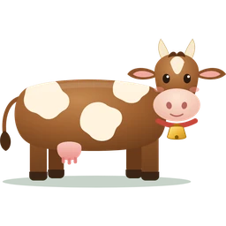

- Articles
- Cow milk: Jersey, Guernsey and the European herd

Cow milk: Jersey, Guernsey and the European herd
What the percentages mean, what A2/A2 means, and how to choose between our three cow milks.
We carry raw cow milk from three kinds of herds. All three are 100% grass-fed whole milk, straight from the cow. The difference is in the breed, and you can taste it.
Three herds, three milks
| Milk | Butterfat | What it's like | From |
|---|---|---|---|
| Jersey | 6.3% | Very rich and creamy. A2/A2. | $6.50 · half gallon |
| Guernsey | High | Golden from beta-carotene, high in protein and fat. A2/A2. | $5.50 · glass quart |
| European herd | 4.8% | A mixed herd of Swiss, Dutch Belted and Shorthorn cows. A little lighter. | $6.50 · half gallon |
The percentages are butterfat. Every one of them is whole milk. Nothing is skimmed off or added.
Why Guernsey is special
Guernsey milk has a golden color all the way through, from the beta-carotene in the grass. It's rare, and Kathy started her own herd to bring it to members. The herd is small, so when the Guernsey runs out, we substitute Jersey.
What does A2/A2 mean?
Milk has two main types of a protein called beta-casein, known as A1 and A2. A cow with two copies of the A2 gene, written A2/A2, gives milk with only the A2 type. Our Jersey and Guernsey milks are A2/A2.
What we make from it
Butter, cream, buttermilk, whey, kefir, yogurt, Greek yogurt, cottage cheese, ricotta, sour cream, cream cheese, rice pudding, egg custard and ice cream. Then there are Maryam's raw Guernsey cheeses, about twenty of them.
Keeping it fresh
- Get it into the fridge fast, and keep it at the back where it's coldest.
- Glass keeps milk colder than plastic.
- The cream rises to the top. Shake the bottle before pouring, or skim the cream off for your coffee.